Aspen Search
Captures desktop
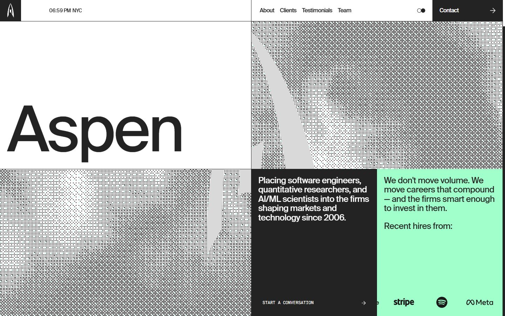

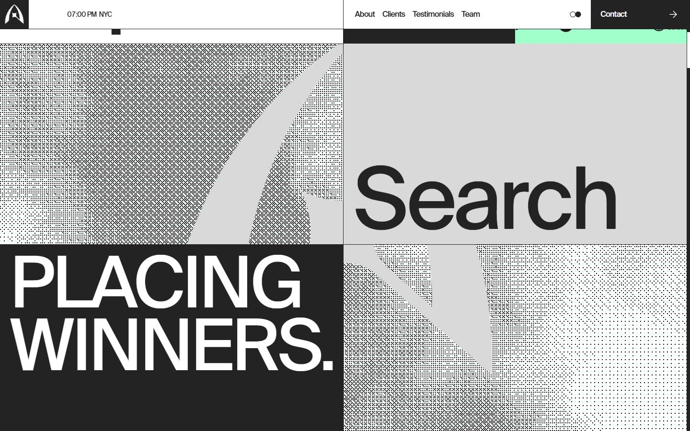
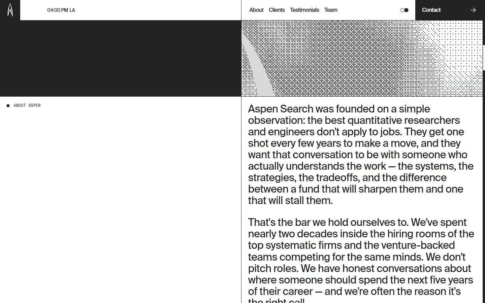
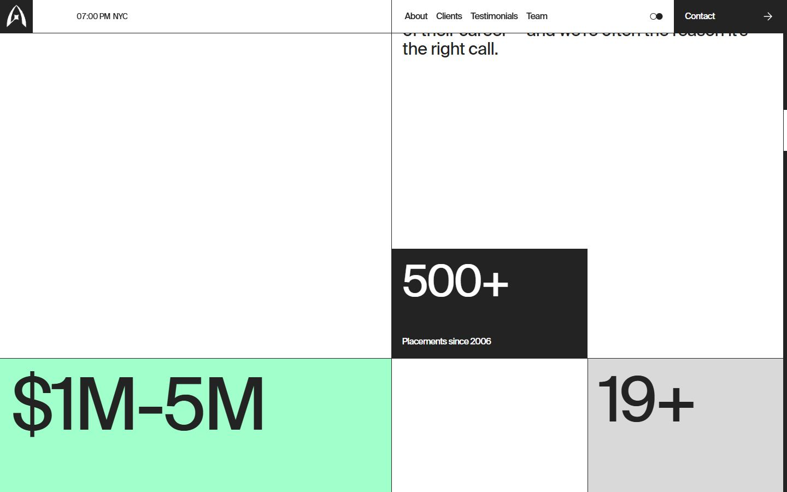
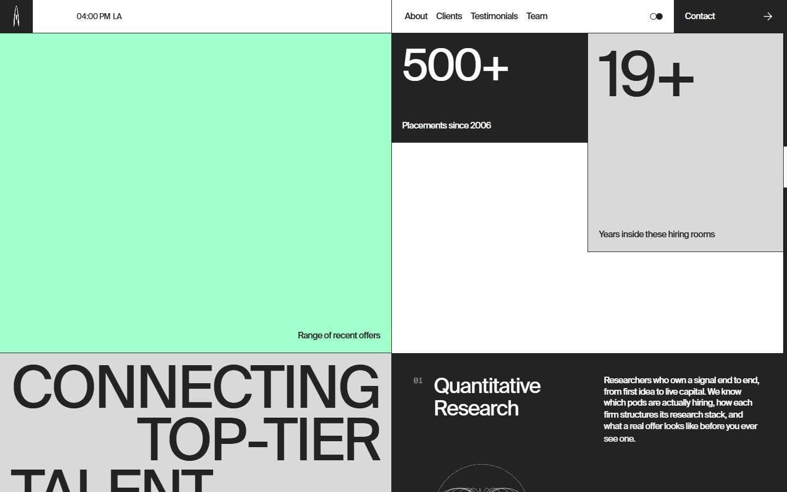
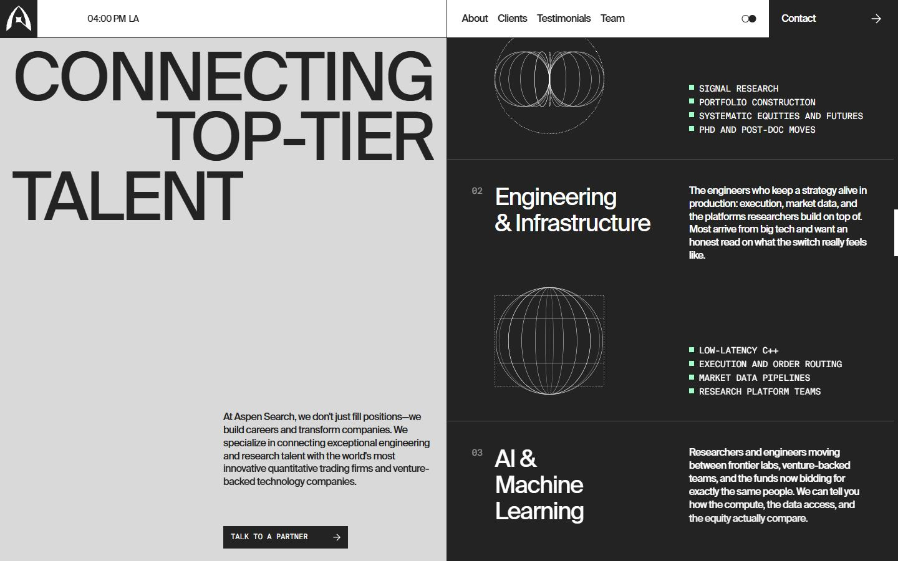
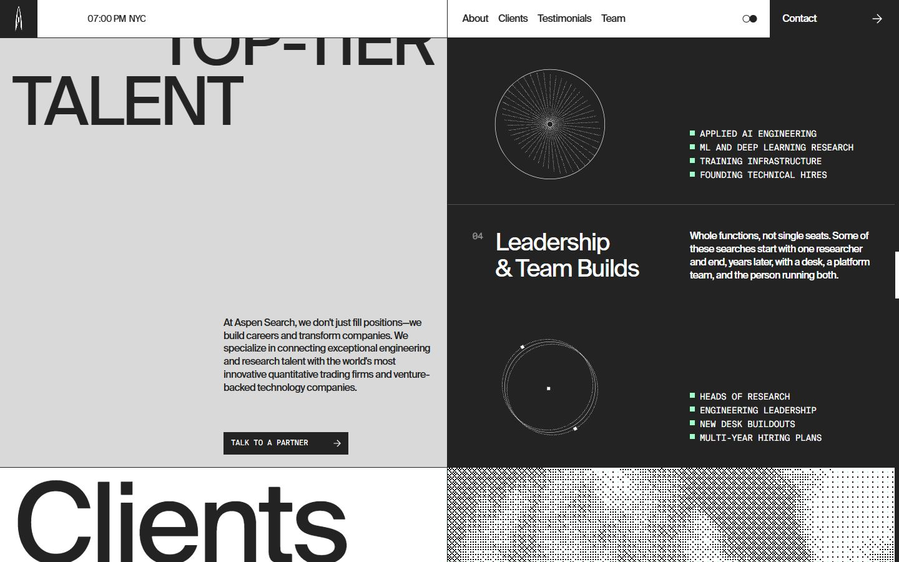
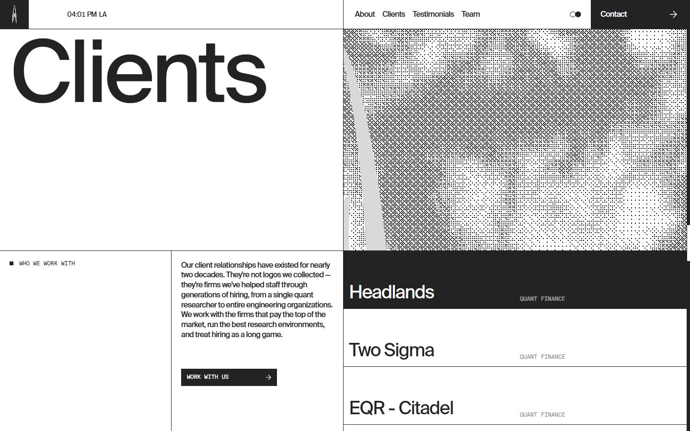
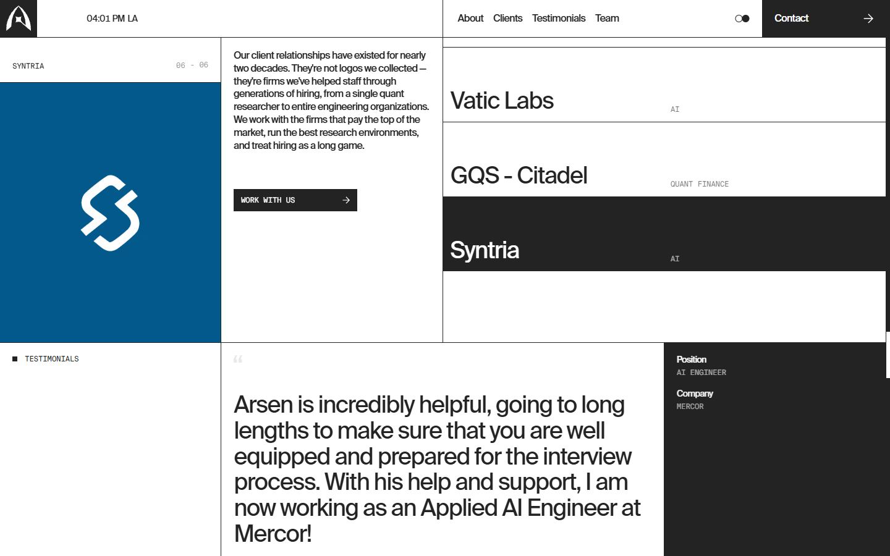
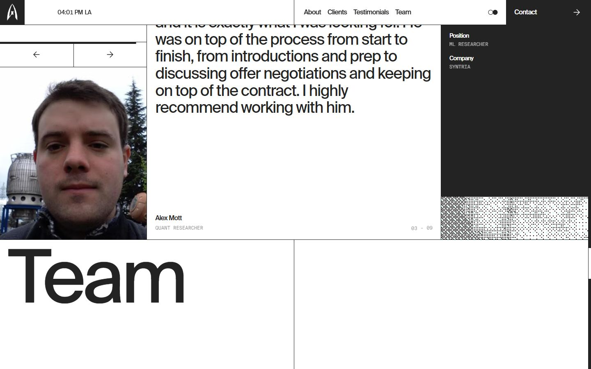
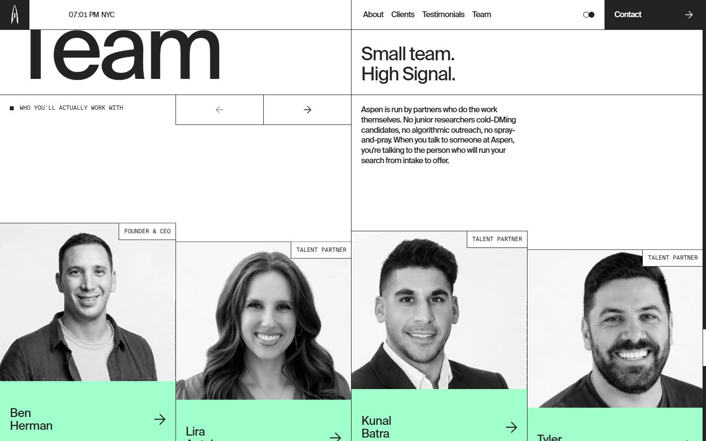
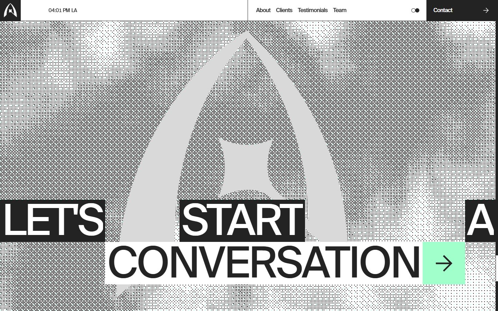
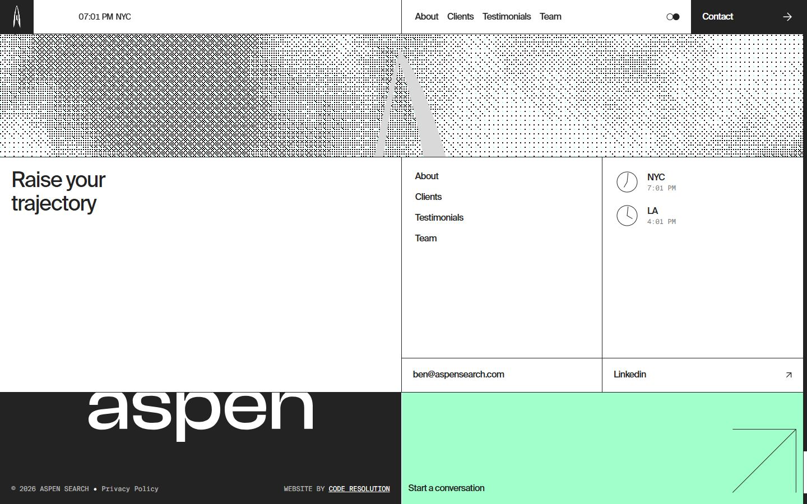
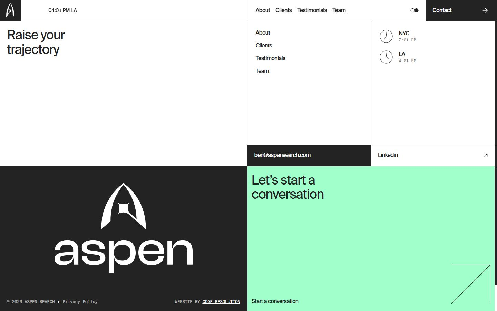
Mobile
Stack détectée
CMS Contentful, CMS Sanity, Lenis, Lottie, Next.js, Postprocessing, React, React Three Fiber, Three.js, Virtual scroll, WebGL
Shaders GLSL personnalisés extraits : 38 (voir shaders.glsl)
Design tokens
Couleurs (fonds, pondérées par surface)
#ffffff · #232323 · #e0e0e0 · #a1ffcb · #d9d9d9 · #08225a · #004b87 · #009aa6
Couleurs de texte
#232323 · #ffffff
Polices utilisées (par volume de texte)
suisseIntl · suisseIntlMono
Fichiers de police chargés
Typographie
| Élément | Police | Taille | Graisse | Interligne | Interlettrage | Casse |
|---|---|---|---|---|---|---|
| h1 | suisseIntl, "suisseIntl Fallback", Arial, system-u | 180.669px | 450 | 180.669px | -4% | none |
| h2 | suisseIntl, "suisseIntl Fallback", Arial, system-u | 16px | 450 | 20.8px | -4% | uppercase |
| h3 | suisseIntl, "suisseIntl Fallback", Arial, system-u | 37.9102px | 450 | 41.7012px | -4% | none |
| p | suisseIntl, "suisseIntl Fallback", Arial, system-u | 180.669px | 450 | 144.536px | -4% | none |
| a | suisseIntl, "suisseIntl Fallback", Arial, system-u | 16px | 450 | 20.8px | -4% | none |
| button | suisseIntl, "suisseIntl Fallback", Arial, system-u | 16px | 450 | 20.8px | -4% | none |
| li | suisseIntl, "suisseIntl Fallback", Arial, system-u | 16px | 450 | 20.8px | -4% | none |
| body | suisseIntl, "suisseIntl Fallback", Arial, system-u | 16px | 450 | 20.8px | -4% | none |
Échelle des tailles de texte
14px (125) · 12px (120) · 16px (57) · 80px (35) · 132.163px (26) · 114.776px (24) · 37.9102px (21) · 24px (20) · 180.669px (9) · 123.525px (4) · 107.068px (3) · 149.467px (2) · 30.9551px (2)
Arrondis
aucun (angles droits)
Transitions CSS fréquentes
Points de rupture (media queries)
64rem · 40rem · 48rem · 80rem · 96rem
Animations CSS (@keyframes)
theme-sweep-ltr, theme-sweep-rtl, hero-logo-coin, typewriter-cursor-blink, marqyL, marqyR, marqyU, marqyD
Variables CSS (:root)
--font-sans: var(--font-suisse-intl), ui-sans-serif, system-ui, "Apple Color Emoji", "Segoe UI Emoji", "Segoe UI Symbol"; --font-mono: var(--font-suisse-intl-mono), ui-monospace, monospace; --spacing: .0625rem; --font-weight-medium: 500; --font-weight-semibold: 600; --font-weight-bold: 700; --default-transition-duration: .15s; --default-transition-timing-function: var(--ease-in-out); --default-font-family: var(--font-sans); --default-mono-font-family: var(--font-mono); --fluid-min-w: var(--layout-min-w,375); --fluid-max-w: var(--layout-max-w,1600); --fluid-slope: calc((100vw - calc(var(--spacing) * var(--fluid-min-w))) / (var(--fluid-max-w) - var(--fluid-min-w))); --text-caption-10: calc(var(--spacing) * 12); --text-caption-10--font-weight: 400; --text-caption-10--line-height: 1.1; --text-caption-10--letter-spacing: -4%; --text-caption-20: calc(var(--spacing) * 14); --text-caption-20--font-weight: 400; --text-caption-20--line-height: 1; --text-caption-20--letter-spacing: -4%; --text-body-10: calc(var(--spacing) * 16); --text-body-10--font-weight: 450; --text-body-10--line-height: 1.3; --text-body-10--letter-spacing: -4%; --text-body-20: calc(var(--spacing) * 24); --text-body-20--font-weight: 450; --text-body-20--line-height: 1.1; --text-body-20--letter-spacing: -2%; --text-body-30: clamp(calc(var(--spacing) * 24), calc(var(--spacing) * 24) + (32 - 24) * var(--fluid-slope), calc(var(--spacing) * 32)); --text-body-30--font-weight: 450; --text-body-30--line-height: 1.1; --text-body-30--letter-spacing: -2%; --text-headline-10: clamp(calc(var(--spacing) * 24), calc(var(--spacing) * 24) + (40 - 24) * var(--fluid-slope), calc(var(--spacing) * 40)); --text-headline-10--font-weight: 450; --text-headline-10--line-height: 1.1; --text-headline-10--letter-spacing: -4%; --text-headline-20: clamp(calc(var(--spacing) * 32), calc(var(--spacing) * 32) + (48 - 32) * var(--fluid-slope), calc(var(--spacing) * 48)); --text-headline-20--font-weight: 450; --text-headline-20--line-height: 1; --text-headline-20--letter-spacing: -4%; --text-headline-30: clamp(calc(var(--spacing) * 40), calc(var(--spacing) * 40) + (56 - 40) * var(--fluid-slope), calc(var(--spacing) * 56)); --text-headline-30--font-weight: 450; --text-headline-30--line-height: 1; --text-headline-30--letter-spacing: -4%; --text-headline-40: clamp(calc(var(--spacing) * 40), calc(var(--spacing) * 40) + (100 - 40) * var(--fluid-slope), calc(var(--spacing) * 100)); --text-headline-40--font-weight: 450; --text-headline-40--line-height: 1; --text-headline-40--letter-spacing: -4%; --text-headline-50: clamp(calc(var(--spacing) * 52), calc(var(--spacing) * 52) + (200 - 52) * var(--fluid-slope), calc(var(--spacing) * 200)); --text-headline-50--font-weight: 450; --text-headline-50--line-height: .8; --text-headline-50--letter-spacing: -4%; --text-digit-10: calc(var(--spacing) * 80); --text-digit-10--font-weight: 450; --text-digit-10--line-height: 1; --text-digit-10--letter-spacing: -4%; --text-digit-20: clamp(calc(var(--spacing) * 80), calc(var(--spacing) * 80) + (120 - 80) * var(--fluid-slope), calc(var(--spacing) * 120)); --text-digit-20--font-weight: 450; --text-digit-20--line-height: 1; --text-digit-20--letter-spacing: -4%; --text-digit-30: clamp(calc(var(--spacing) * 80), calc(var(--spacing) * 80) + (140 - 80) * var(--fluid-slope), calc(var(--spacing) * 140)); --text-digit-30--font-weight: 450; --text-digit-30--line-height: 1; --text-digit-30--letter-spacing: -4%; --animate-hero-logo-coin: hero-logo-coin 20s linear infinite; --animate-typewriter-cursor: typewriter-cursor-blink 1s step-end infinite; --layout-min-w: 375; --layout-max-w: 1600; --color-black: #232323; --color-black-deep: #000; --color-white: #fff; --color-mint: #a1ffcb; --color-grey: #d9d9d9; --radius-4: calc(var(--spacing) * 4); --ease-in: cubic-bezier(.55, 0, 1, .45); --ease-out: cubic-bezier(.16, 1, .3, 1); --ease-in-out: cubic-bezier(.87, 0, .13, 1); --color-theme-bg: rgb(var(--theme-bg)); --color-theme-fg: rgb(var(--theme-fg));
Structure de la home
Hauteur : 10840 px — 1478 nœuds DOM — canvas 2, vidéos 0, images 39
| # | Bloc | Hauteur | Titre | Médias |
|---|---|---|---|---|
| 1 | div .relative | 1845 | Aspen | 49 |
| 2 | div#about .relative z-1 scroll-mt-(--site-header-he | 1979 | 0 | |
| 3 | div .scroll-mt-(--site-header-height) | 1723 | Connectingtop-tiertalent | 0 |
| 4 | div#clients .scroll-mt-(--site-header-height) overflo | 1426 | Clients | 12 |
| 5 | div#testimonials .scroll-mt-(--site-header-height) | 840 | 4 | |
| 6 | div#team .scroll-mt-(--site-header-height) | 1287 | Team | 15 |
| 7 | section .@container relative flex min-h-[calc(100 | 1380 | 0 |
Navigation : About · Clients · Testimonials · Team · About · Clients · Testimonials · Team
Boutons / CTA : Contact · Start a conversation · Talk to a partner · Work with us · Ben Herman · Lira Aptekman · Kunal Batra · Tyler Guimaraes · Mike Leonard · Mario Mlinaric · Shawn Glabach · ben@aspensearch.com · Linkedin
SEO
Plan des titres
Performance (mesure locale, Chrome headless, connexion non bridée)
Mobile
Fichiers
captures/ : arrivée, scroll desktop (1440×900), pleine page, pages internes, mobile (390×844 @2x) ; vidéo de scroll dans la release GitHub « videos » (lien en haut de fiche)page.html : DOM rendu · styles.css : CSS chargé · scripts/ : JS chargé (index dans _index.json) · shaders.glsl : shaders extraits · rea-bundle.json : analyse REA du bundle (chunks, routes, endpoints)